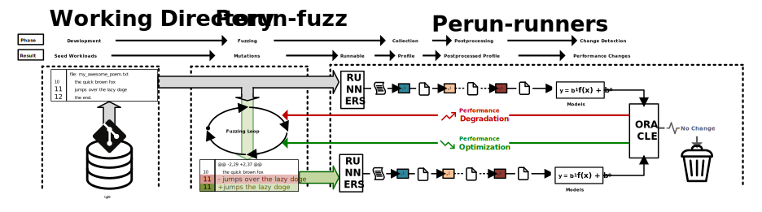

Performance Fuzz-testing¶
Unfortunately, in our experience, manually created test cases usually do not detect hidden performance bugs, because they do not cover all cases of inputs. The performance testing of ones application heavily depends on input workloads. So in order to have best set of input workloads, it is appropriate to adapt more advanced techniques of testing.
Fuzzing is a well-known testing technique used to find vulnerabilities in applications by sending garbled data as an input and then monitoring the application for crashes. It has been shown that even just an aggressive random testing is impressively effective at finding faults and has enjoyed great success at discovering security-critical bugs as well. Using fuzz testing, developers and testers can ‘hack’ their systems to detect potential security threats before attackers can. So why should not we use fuzzing to discover implementation faults affecting performance?
We noticed that, while there are many projects implementing fuzz testing technique, unfortunately, none of them allows to add custom mutation strategies which could be more adapted for the target program and mainly for triggering performance bugs. In Perun, we proposed a modification of fuzz testing unit that specializes for producing inputs greedy for resources. We proposed new mutation strategies inspired by causes of performance bugs found in real projects. We believe that combining performance versioning and fuzzing could raise the ratio of successfully found performance bugs early in the process.
Overview¶
The underdeveloped field of performance fuzz testing has inspired us to explore this field more and extend the Perun tool with fuzzing module that tries to find new workloads (or inputs) that will likely cause a change in program performance. In particular, the fuzzing mode of Perun offers:

New mutation rules: We devised new rules designed to affect performance. Our group of rules is general, and does not focus on the only one type of potential performance problem and tackles several types of input files and their associated performance issues.
Classic rules: The existing fuzzers proposed so called classical rules, and they have achieved great success in past, therefore we adapt the classic generally used mutation rules to our collection of rules as well.
Perun-based evaluation: We select inputs for mutation mainly according to the Perun results, instead of using classical evaluation criteria.
Heuristics based on coverage testing: The fuzzing is in general a brute-force technique, and so we do not want to test with Perun every workload, since Perun adds considerable overhead for each testing. We implement a heuristic, that first tests the coverage of the code to quickly filter out completely uninteresting workloads before evaluating them by Perun.
Interpretation of mutated workloads: We believe that after the fuzz testing, testers primarily want to know what workloads are making the troubles to application and how they differ from the original files. We propose a simple technique for visualizing the results of the fuzzing by showing the differences between input seeds and their resulting mutations.
Interpretation of the fuzzing process: Additionally to visualization of inferred workload, we also provide several graphs that illustrates the illustrates the fuzzing process itself. This allows developers to tune out regular fuzzing testings to achieve best results in best possible time.
{kind=link}
Our solution currently modifies input workload files (one of the most common format of program workload) based on mutational approach. The feedback loop is extended with coverage information, for the purpose of increasing the efficiency and chances to find the worst-case workloads and is used as initial test for finding possible time-consuming workloads. After the initial evaluation we use Perun, to automatically detects performance changes based on the data collected within the program runtime.
For different file types (or those of similar characteristics) we use different groups of mutation methods. Hence, we apply domain-specific knowledge for certain types of files to trigger the performance change or find unique errors more quickly.
Before the actual fuzzing loop, we first determine the performance baseline, i.e. the expected
performance of the program, to which future results (so called targets) will be compared. In initial
testing we first measure code coverage (number of executed lines of code) while executing each
initial seed. The median of measured coverage data is then considered as the baseline for coverage
testing. Second, Perun is run to collected memory, time or trace resource records with initial seeds
resulting into baseline profiles (base_profile). Practically performance baseline profiles
describe the performance of the program on the given workload corpus. After the initial testing,
the seeds in the corpus are considered as parents for future mutations and rated by the evaluation
function.
The fuzzing loop itself starts with choosing one individual file from corpus (initial seeds). This file is then transformed into mutations. We first precollect the interesting mutations: those that increase the number of executed lines. We argue that prefiltering the results with coverage based testing is fast and can yield satisfying results. In later step, we combine these results with the performance check, which is on the other hand slower, but yields precise results
After precollecting the interesting workloads, we collect run-time resources (memory, trace, time) using Perun’s collectors (see Collectors Overview), transforms them to so called target profiles and checks for performance changes by comparing newly generated target profile with baseline performance profile (see Detecting Performance Changes for more details about degradation checks). We repeat, that the intuition is, that running coverage testing is faster than collecting performance data (since it introduces certain overhead) and collecting performance data only for possibly newly covered paths could result into more interesting workloads. According to the number of gathered workloads we adapt the coverage increase ratio, with an aim to either mitigate or tighten the condition for classification a workload as an interesting one.
List of results of each testing iteration in the main loop contains successful mutations and
the history of the used rules, that led to their current form. Collection of interesting workloads
is limited by two parameters: the current number of program executions (specified by option
--execs-limit) and the current number of collected files (specified by
--interesting-files-limit). The first limit guarantees that the loop will terminate. On
the other hand, if it is set to excessively high value, it would lead to a long duration of this
phase, especially if the test program itself is used to run for a longer time. The latter limit
ensures the loop will end in reasonable time and collects reasonable number of workloads.
The combination of these limits ensures termination in reasonable time.
Note, that we can collect line coverage only in the presence of source files. In case we are supplied only with binary or script, we skip the first (and fast) testing phase and only checks for possible performance changes.
Mutation Strategies¶
In general, the goal of mutational strategies is to randomly modify a workload to create a new one. We propose a series of rules inspired by both existing performance bugs found in real projects, and general knowledge about used data structures, sorting algorithms, or regular expressions.
Both the types of workloads and the rules for their modification are divided into several groups: text, binary and domain specific. In particular, we currently support domain-specific rules for XML format based files. We identify each rule with its own label name (T stands for text, B for binary and D for domain-specific), with a brief description of what it concentrates on and the demonstration result of its application on some sample data. In case the rule is inspired by concrete bug found in real application, we list the link to the report.
Collects fuzzing rules specific for text files.
- perun.fuzz.methods.textfile.change_character()¶
Rule T.4: Change random character.
Input: “the quick brown fox jumps over the lazy dog”
Mutation: “the quack brown [b]ox jumps over the lazy dog”
Description: Adaptation of classical rule for text files. Changes a random character at random line to different character.
Known Issues: none
- perun.fuzz.methods.textfile.delete_character()¶
Rule T.15: remove a random character.
Input: “the quick brown fox jumps over the lazy dog”
Mutation: “the quck brown fox jumps over the lazy dog”
Description: Removes a random character in random word in random line.
Known Issues: none
- perun.fuzz.methods.textfile.divide_line()¶
Rule T.3: Divide line.
Input: “<author>Gambardella, Matthew</author>”
Mutation: “<author>Gambardella, Matthew</au”, “thor>”
Description: Divides a line by inserting newline character in random position.
Known Issues: none
- perun.fuzz.methods.textfile.double_line()¶
Rule T.1: Double the size of a line.
Input: “The quick brown fox.”
Mutation: “The quick brown fox.The quick brown fox.”
Description: This rule focuses on possible performance issues associated with long lines appearing in files. The rule doubles the selected random line in the input.
Known Issues:
gedit text editor (issue with too long lines)
Poorly validated regexps (issue with lengthy backtracking)
- perun.fuzz.methods.textfile.duplicate_line()¶
Rule T.2: Duplicate a line.
Input: “The quick brown fox.”
Mutation: “The quick brown fox.”, “The quick brown fox.”
Description: Extends the file vertically, by duplicating random line in the file.
Known Issues: none
- perun.fuzz.methods.textfile.delete_line()¶
Rule T.13: Remove random line.
Input: “the quick brown fox jumps over the lazy dog”
Mutation: “”
Description: Removes random line.
Known Issues:
- perun.fuzz.methods.textfile.append_whitespace()¶
Rule T.8: Append whitespaces.
Input: “the quick brown fox jumps over the lazy dog”
Mutation: “the quick brown fox jumps over the lazy dog[ ]”
Description: The rule appends random number of whitespaces at random line.
Known Issues: none
- perun.fuzz.methods.textfile.insert_whitespace()¶
Rule T.10: Insert whitespaces on a random place.
Input: “the quick brown fox jumps over the lazy dog”
Mutation: “The quick bro[ ]wn fox jumps over the lazy dog”
Description: The rule inserts random number of whitespaces at random place in the random line. There are several intuitions behind this rule: (1) some trimming regular expressions can induce the excessive number of backtracking, and (2) some structures, such as hash tables, can have bad properties and lead to a singly-linked list when induced with lots of words (e.g. when one chooses wrong size of the table or bad hash-function.
Known Issues: none
- perun.fuzz.methods.textfile.prepend_whitespace()¶
Rule T.9: Prepend whitespaces.
Input: “the quick brown fox jumps over the lazy dog”
Mutation: “[ ]The quick brown fox jumps over the lazy dog”
Description: The rule prepends random number of whitespaces at random line.
Known Issues:
StackOverflow regular expression with quadratic number of backtrackings.
- perun.fuzz.methods.textfile.repeat_whitespace()¶
Rule T.11: Repeat whitespaces.
Input: “the quick brown fox jumps over the lazy dog”
Mutation: “The quick brown[ ] fox jumps over the lazy dog”
Description: The rule repeats random number of whitespaces at random place in the random line. There intuition behind this rule is that some trimming regular expressions can induce the excessive number of backtracking.
Known Issues: none
- perun.fuzz.methods.textfile.bloat_words()¶
Rule T.12: Remove whitespaces.
Input: “The quick brown fox.”
Mutation: “The quickbrown fox.”
Description: Removes whitespace from a random line. The intuition is to create a bigger words that might bloat the underlying structures.
Known Issues: none
- perun.fuzz.methods.textfile.repeat_word()¶
Rule T.5: Repeat random word of a line.
Input: “the quick brown fox jumps over the lazy dog”
Mutation: “the quick brown [brown] fox jumps over the lazy dog”
Description: The rule picks a random word in random line and repeats it several times. The intuition is, that there e.g. exist certain vulnerabilities, when repeated occurrences of words can either lead to faster (e.g. when the word is cached) or slower time (e.g. when in hash-table the underlying structure is degradated to list). Moreover, some algorithms, such as quick sort are forced to worst-case, when all elements are same.
Known Issues: none
- perun.fuzz.methods.textfile.delete_word()¶
Rule T.14: Remove random word
Input: “the quick brown fox jumps over the lazy dog”
Mutation: “the brown fox jumps over the lazy dog”
Description: Removes random word in random line.
Known Issues: none
- perun.fuzz.methods.textfile.sort_line()¶
Rule T.6: Sort words or numbers of a line.
Input: “The quick brown fox.”
Mutation: “brown fox quick The.
Description: The intuition of this rule is to force bad behaviour, e.g. to sorting algorithm, that in some cases perform worse for sorted output, or to balanced trees, which might be unbalanced for sorted values.
Known Issues: none
- perun.fuzz.methods.textfile.sort_line_in_reverse()¶
Rule T.7: Sort words or numbers of a line in reverse.
Input: “The quick brown fox.”
Mutation: “brown fox quick The.
Description: The intuition of this rule is to force bad behaviour, e.g. to sorting algorithm, that in some cases perform worse for sorted output, or to balanced trees, which might be unbalanced for sorted values.
Known Issues: none
In case of binary files we cannot apply specific domain knowledge nor can we be inspired by existing performance issues. Instead, we mostly adapt the classical fuzzing rules.
- perun.fuzz.methods.binary.insert_byte()¶
Rule B.3: Insert random byte.
Input: “the quick brown fox jumps over the lazy dog”
Mutation: “the qui#ck brown fox jumps over the lazy dog”
Description: Implementation of classical fuzzing rule.
Known Issues: none
- perun.fuzz.methods.binary.remove_byte()¶
Rule B.4: Remove random byte.
Input: “the quick brown fox jumps over the lazy dog”
Mutation: “the quik brown fox jumps over the lazy dog”
Description: Implementation of classical fuzzing rule.
Known Issues: none
- perun.fuzz.methods.binary.swap_byte()¶
Rule B.5: Swap random bytes.
Input: “the quick brown fox jumps over the lazy dog”
Mutation: “the quock brown fix jumps over the lazy dog”
Description: Implementation of classical fuzzing rule. Picks two random lines and two random bytes in the line and swaps them.
Known Issues: none
- perun.fuzz.methods.binary.insert_zero_byte()¶
Rule B.2: Insert random zero byte.
Input: This is C string. You are gonna love it.
Mutation: This is string.```` You are gonna love it.
Description: The rule inserts random zero byte
\in the string. The intuition is to target the C language application, that process the strings as zero-terminated string of bytes.Known Issues: none
- perun.fuzz.methods.binary.remove_zero_byte()¶
Rule B.1: Remove random zero byte
Input: This is C string.You are gonna love it.
Mutation: This is string. You are gonna love it.
Description: The rule removes random zero byte
\in the string. The intuition is to target the C language application, that process the strings as zero-terminated string of bytes. Removing the zero byte could lead to program non-termination, or at least crashing when reading the whole memory.Known Issues: none
- perun.fuzz.methods.binary.flip_bit()¶
Rule B.6: Flip random bit.
Input: “the quick brown fox jumps over the lazy dog”
Mutation: “the quack brown fox jumps over the lazy dog”
Description: Implementation of classical fuzzing rule.
Known Issues: none
Exploiting more domain-specific knowledge about the workload we
devised specific rules for concrete formats. We propose rules for
removing tags, attributes, names or values of attributes used in XML
based files (i.e. . xml, .svg, .xhtml, .xul).
For example, we can assume a situation, when fuzzer removes closing tag,
which will increase the nesting. Then a recursively implemented parser
will fail to find one or more of closing brackets (representing recursion
stop condition) and may hit a stack overflow error.
- perun.fuzz.methods.xml.remove_attribute_value()¶
Rule D.3: Removed attribute value.
Input: <book id=”bk106” pages=”457”>
Mutation: <book id=”bk106” pages=””>
Description: Removes random value of the attribute in the random line and tag.
Known Issues: none
- perun.fuzz.methods.xml.remove_attribute_name()¶
Rule D.2: Remove attribute name.
Input: <book id=”bk106” pages=”457”>
Mutation: <book id=”bk106” “457”>
Description: Removes name of the attribute in random tag in the random line.
Known Issues: none
- perun.fuzz.methods.xml.remove_attribute()¶
Rule D.1: Remove an attribute.
Input: <book id=”bk106” pages=”457”>
Mutation: <book id=”bk106”>
Description: Selects random tag and removes a random attribute.
Known Issues: none
- perun.fuzz.methods.xml.remove_tag()¶
Rule D.4: Remove tag.
Input: <book id=”bk106” pages=”457”>
Mutation:
Description: Removes a random tag.
Known Issues: none
We further offer the possibility of adding custom rules. For adding the rules to a mutation strategy
set, you can launch the fuzzer with a special file in YAML file format containing the description of
applied rules using the --regex-rules option. Each rule is represented as an associative array
in a form key: value, where both are regular expressions but key is a pattern which should be
replaced, and value* is the replacement.
Back: Front
del: add
remove: create
([0-9]{6}),([0-9]{2}): \\1.\\2
(\\w+)=(\\w+): \\2=\\1
Additionally, one can extend the existing rules by modifying files binary.py, textfile.py or
xml.py in the methods package. Further, it is necessary to modify the script
filetype.py, which is responsible for selecting the rules. To add, for example, specific rules
for JSON file type, one just has to create a new script, e.g. json.py, and modify the rules
selection. Note that every rule should contain a brief description, which will be displayed after
fuzzing.
Passing Input Sample¶
Workloads can be passed to fuzzer as an arbitrary mix of files or directories using the
--input-sample option. Directories are then iteratively walked for all files with reading
permissions. Optionally files can be filtered using option --workloads-filter: a user specified
regular expression that file names must match. E.g one can fuzz with XML files by setting expression
--workloads-filter="^.*.xml$". Or if one wants to skip all the files with the name containing
string “error” one can use --workloads-filter="^((?!error).)*$". Note that the fuzzer should
always be launched with just one type of initial files even if the target application supports more
types, since we tune the rules according to workload file format.
Selecting Mutation Methods¶
We select corresponding mutation strategies based on the first loaded workload file. Basically, if the file is a binary, all the rules specific to binaries are added to the set of rules, otherwise we add all the basic text rules. We further analyse the mime type of a file and if it is supported by the fuzzer, we add to the set of rules mime-specific rules as well as any user-defined rules.
We argue the advantage of fuzzing with one file type rests in its code covering feature. To be more precise, we are not observing at the overall percentage of code coverage, but how many lines of code has been executed in total during the run, with an aim to maximise it. Consider an application that extracts meta-data from different media files, such as WAV, JPEG, PNG, etc. If a PNG image file is used as a seed to this application, only the parts related to PNG files will be tested. Then testing with WAV will cause, that completely different parts of the program will be executed, hence total executed code lines of these two runs cannot compare with each other because reaching higher line coverage with WAV files would lead to preferring them for fuzzing, and PNG files would be neglected. Moreover, we are aware that this strategy may miss some performance bugs. Fuzzing multiple mime-types is current feature work.
Initial Testing¶
The newly mutated results have to be compared against some expected behaviour, performance or value: so called baseline results (i.e. results and measurements of workload corpus). Hence, initial seeds become test cases and they are used to collect performance baselines. By default, our initial program testing (as well as testing within the fuzzing loop) interleaves two phases described in more details below: coverage and performance-guided testing.
In perun-fuzz, we use gcov tool to measure the code coverage. Note that the program has to be
build for coverage analysis with GNU Compiler Collection (GCC) with the option --coverage (or
alternatively a pair of options -fprofile-arcs -ftest-coverage). The resulting file with
the extension .gcno then contains the information about basic block graphs and assigns source
line numbers to blocks. If we execute the target application a separate .gcda files are then
created for each object file in the project. These files contain arc transition counts, value
profile counts, and additional summary information gcov.
Total count of executed code lines through all source files represents the baseline coverage (and partly also a performance) indicator. An increase of the value means that more instructions have been executed (for example, some loop has been repeated more times) so we hope that performance degradation was likely triggered as well. Note that the limitation of this approach is that it does not track uniquely covered paths, which could trigger performance change as well. Support of more precise coverage metrics is a future work.
First the target program is executed with all workloads from corpus. After each execution, .gcda
files are filled with coverage information, which Gcov tool parses and generates output files. We
parse coverage data from the output .gcov file, sum up line executions, compare with the current
maximum, update the maximum if new coverage is greater and iterate again. It follows that base
coverage is the maximum count of executed lines reached during testing with seeds.
While coverage-based testing within fuzzing can give us fast feedback, it does not serve as an accurate performance indicator. We hence want to exploit results from Perun. We run the target application with a given workload, collect performance data about the run (such as runtime or consumed memory) and store them as a persistent profile (i.e. the set of performance records). Again, we will need a performance baseline, which will be compared with newly generated mutations. Profiles measured on fuzzed workloads (so called target profiles) are then compared with a profile describing the performance of the program on the initial corpus (so calledbaseline profiles). In order to compare the pair of baseline and target profiles, we use sets of calculated regression models, which represents the performance using mathematical functions computed by the least-squares method. We then use the Perun internal degradation methods (see Detecting Performance Changes.
Evaluation of Mutations¶
Initially, the workload corpus is filled with seeds (given by user), which will be parents to newly generated mutations (we can also call these seeds parent workloads). In the main loop, we extend this corpus with successful mutations which in retrospect become parent workloads too. The success of every workload is represented by the fitness score: a numeric value indicating workload’s point rating. The better rating of workload leads either to better code coverage (and possibly new explored paths or iterations) or to newly found performance changes. We calculate the total score by the following evaluation function:
\(score_{workload} = icovr_\text{workload} * (1 + pcr_\text{workload})\).
Increase coverage rate (icovr): This value indicates how much coverage will change if we run the program with the workload, compared to the base coverage measured for initial corpus. Basically, it is a ratio between coverage measured with the mutated workload and the base coverage:
\(icovr_\text{workload} = cov_\text{workload} / cov_\text{base}\).
Performance change rate (pcr): In general, we compare the newly created profile with the baseline profile and the result is a list of located performance changes (namely degradations, optimisations and no changes). Performance change rate is then computed as ratio number of degradations in the result list:
\(pcr_\text{workload} = \text{cnt(}degradation\text{, }result\text{)} / \text{len}(result)\)
This value plays a large role in the overall ranking of workload, because it is based on the real data collected from the run. And so workloads that report performance degradations and not just increases coverage have better ranking. The computation of \(pcr_\text{workload}\) could further be extended by the rate of degradations, i.e. if two workloads found the same number of degradations, the workload which contains more serious change would be ranked better. Optimisations of ranking algorithm is another future work. This evaluation serves for informed candidate selection for fuzzing from the parents.
Fuzzing Loop¶
We can catch SIGINT signal to terminate the fuzzing when one decides to quit earlier. Fuzz unit of Perun catches this signal, however, other Perun units (collectors, postprocessors) have not implemented handlers for interruption signal, hence it is not recommended to interrupt during performance testing, but only in the coverage-guided testing phase. In the following, we will describe selected aspects of the main loop of the whole fuzzing process.
At the beginning of every iteration we first select the workloads from parents which will be further mutated. All parents are kept sorted by their scores, and the selection for mutation consists of dividing the seeds into five intervals such that the seeds with similar value are grouped together. In our experience, five intervals seem to be appropriate because with fewer intervals parents are in too big and inappropriate groups and in the case of more intervals, parents with similar score are pointlessly scattered.
First, we assign a weight to each interval using linear distribution. Then we perform a weighted random choice of interval. Finally, we randomly choose a parent from this interval, whereas differences between parent’s scores in the same interval are not very notable. The intuition behind this strategy is to select the workload for mutation from the best rated parents. From our experience, selecting only the best rated parent in every iteration does not lead to a better results, and other parents are naturally ignored. Hence we do selection from all the parents, but the parent with better score has a greater chance to be selected.

In each iteration of fuzzing we generate new workloads. However, we first determine how many new mutation (\(N\)) to generate by rule \(f\) in the current iteration of fuzzing loop. If \(N\) is too big and we generate mutations for each rule \(f\) from the set of rules, the corpus will bloat. On the other hand, if \(N\) is too low, we might not trigger any change at all, as we will not prefer successful rules more. Instead we propose to dynamically calculate the value of \(N\) according to the statistics of fuzzing rules during the process. Statistical value of rule \(f\) is a function:
\(stats_f = (degs_f + icovr_f)\)
where \(degs_f\) represents the number of detected degradations by applying the rule \(f\),
and \(icovr_f\) stands for how many times the coverage was increased by applying rule \(f\).
Fuzzer then calculates the number of new mutations for every rule to be applied in four possible
ways using --mutations-per-rule option:
--mutations-per-rule=unitary. The case when \(N=1\), the fuzzer will generate one mutation per each rule. This is a simple heuristic without the usage of statistical data and where all the rules are equivalent.--mutations-per-rule=proportional. The case when \(N=min(stats_f+1, FLPR)\), the fuzzer will generate mutations proportionally to the statistical value of function (i.e. \(stats_f\)). More mutation workloads are generated for more successful rules. In case the rule \(f\) has not caused any change in coverage or performance (i.e. \(stat_f=0\)) yet, the function will ensure the same result as in the first strategy. File Limit Per Rule (FLPR) serves to limit the maximum number of created mutations per rule and is set to value 100.--mutations-per-rule=probabilistic. Heuristic that depends on the total number of degradation or coverage increases (\(total\)). The ratio between \(stats_f\) and \(total\) determines the probability \(prob_f\), i.e. the probability whether the rule \(f\) should be applied, as follows:\[\begin{split}prob_f = \begin{cases} 1 & \text{if } total=0 \\ 0.1 & \text{if } stats_f / total < 0.1\\ stats_f / total & \text{otherwise} \end{cases}\end{split}\]and we choose \(N\) as:
\[\begin{split}N = \begin{cases} 1 & \text{if } random <= prob_f \\ 0 & \text{otherwise } \end{cases}\end{split}\]Until some change in coverage or performance occurs, (i.e. while \(total=0\)), one new workload is generated by each rule. After some iterations, more successful rules have higher probability, and so they are applied more often. On contrary rules with a poor ratio will be highly ignored. However, since they still may trigger some changes we round them to the probability of 10%.
--mutations-per-rule=mixed. The last heuristic is a modified third strategy combined with the second one. When the probability is high enough that the rule should be applied, the amount of generated workloads is appropriate to the statistical value. Probability \(prob_f\) is calculated equally, but the equation for choosing \(N\) is modified to:\[\begin{split}N = \begin{cases} min(stats_f+1, FLPR) & \text{if } random <= prob_f \\ 0 & \text{otherwise } \end{cases}\end{split}\]
Our fuzzer uses by default the last heuristic, --mutations-per-rule=mixed, because in our
experience it guarantees that it will generate enough new workloads each iteration and will as well
filter out unsuccessful rules without totally discarding them. In case that target program is prone
to workload change and the user wants better interleaving of testing phases, it is recommended to
use the third method (--mutations-per-rule=probabilistic) because the maximum number of all
created mutations in one iteration is limited by the number of selected mutation rules.
The threshold for discarding mutations is multiple of base coverage, set to 1.5 by default. The
threshold can be changed by specifying the --coverage-increase-rate. A mutation is classified as
an interesting workload in case two criteria are met:
\(cov_{mut} > cov_{threshold} \And cov_{mut} > cov_{parent}\)
i.e. it has to exceed the given threshold and achieve a higher number of executed lines than its predecessor.
In addition, the constant which multiplies the base coverage (and thus determines the threshold) changes dynamically during fuzzing. In case it is problematic to reach the specified coverage threshold, the value of the constant decreases and thus gives more chance for further mutations to succeed. Vice versa, if the mutations have no problem to exceed the threshold, the value of the constant is probably too low, and hence we increase it.
During the testing, fuzzed workload can cause that target program terminates with an error (e.g. SIGSEGV, SIGBUS, SIGILL, …) or it can be terminated by timeout. Even though we are not primarily focused on faults, they can be interesting for us as well because an incorrect internal program state can contain some degradation and in case of error, handlers can also contain degradation.

Interpretation of Fuzzing Results¶
The result of the fuzzing is illustrated by the following directory structure.
output_dir/
|--- diffs/
|--- medium_words-02000b239d024dbe933684b6c740512e-diff.html
|--- medium_words-389d4162ad6641d187dc405000b8d50a-diff.html
|--- medium_words-39b5d7aa55fd404aa4d31422c6513e2c-diff.html
|--- faults/
|--- medium_words-389d4162ad6641d187dc405000b8d50a.txt
|--- graphs/
|--- coverage_ts.pdf
|--- degradations_ts.pdf
|--- hangs
|--- medium_words-39b5d7aa55fd404aa4d31422c6513e2c.txt
|--- logs
|--- coverage_plot_data.txt
|--- degradation_plot_data.txt
|--- results_data.txt
|--- medium_words-02000b239d024dbe933684b6c740512e.txt
The results will be saved to the directory specified by --output-dir option. The fuzzing
generates three kinds of mutations: those resulting into degradations (stored in output_dir),
those resulting into errors or faults (stored in output_dir/faults), and those terminated by
timeout (stored in output_dir/hangs). The fuzzing alos generates two time series graphs
in output_dir/graphs), which will be described later. At last in output_dir/diffs are
stored differences between individual mutations and their parents.
The time series graphs show the number of found mutations causing degradation and the maximum recorded number of lines executed per one run. From these graphs, one can e.g. read the time needed to achieve sufficient results and estimate orientation time for future testing. In both graphs are denoted three statistically significant values: first quartile, second quartile (median) and third quartile from the y-axis values. The intention is to illustrate at what point in time we have achieved the individual portion of the result. The usage of time series graphs is meant to tune the properties and options of the fuzzing process.


Besides visualisation, we create diff file for every output file. It shows the differences between files and the original seed, from which the file was created by mutation. The file is in HTML format, and the differences are color-coded for better orientation.
Examples¶
In the following we briefly explore several performance issues found in real projects and a group of regular expressions that have been confirmed as harmful. All the tests ran on a reference machine Lenovo G580 using 4 cores processor Intel Core i3-3110M with maximum frequency 2.40GHz, 4GiB memory, and Ubuntu 18.04.2 LTS operating system.
Regular Expression Denial of Service (ReDoS).¶
In this case study, we analysed artificial programs which use std::regex_search with regular
expressions inspired by existing reported ReDoS attacks (see e.g. redos). In nutshell, ReDoS is
an attack based on algorithmic complexity where regular expression are forced to take long time to
evaluate, mostly because of backtracking algorithm, and leads to the denial of service.
StackOverflow trim regex.¶
The first experiment focuses on the regular expression that caused an outage of StackOverflow in July, 2016. We constructed an artificial program that reads every line and search for match with the regular expression. We used simple source code in C performing parallel grep as an initial seed, written in 150 lines. With only two tests, we could force the vulnerability, as we show in the Table.
size [B] |
runtime [s] |
executed LOC ratio |
lines |
whitespaces |
|
|---|---|---|---|---|---|
\(seed\) |
3535 |
0.096 |
1.00 |
150 |
306 |
\(worst\)-\(case_1\) |
5000 |
1.566 |
24.32 |
5 |
4881 |
\(worst\)-\(case_2\) |
10000 |
2.611 |
41.38 |
17 |
9603 |
The following shows the used mutation rules for each mutation:
used mutation rules |
|
|---|---|
\(worst\)-\(case_{1}\) |
[T.10, T.10, T.10, T.10] |
\(worst\)-\(case_{2}\) |
[T.10, T.10, T.10, T.10, T.10] |
Email validation regex.¶
This regular expression is part of the public RegExLib library and is marked as malicious
and triggering ReDoS. We constructed a program that takes an email address from a file and tries to
find a match with this regular expression. As an initial seed we used a file containing valid email
address spse1po@gmail.com. We ran two tests, in the first case with an email that must contain
the same count of characters as the seed, and in the second case it can contain twice the size.
size [B] |
runtime [s] |
executed LOC ratio |
|
|---|---|---|---|
\(seed\) |
18 |
0.016 |
1.00 |
\(worst\)-\(case_1\) |
18 |
0.176 |
70.83 |
\(worst\)-\(case_2\) |
25 |
10.098 |
4470.72 |
\(worst\)-\(case_{2hang}\) |
36 |
>5 hours |
\(\infty\) |
Two rules, namely removing random character and extending a size of line, were mostly encouraged in the generation of the presented workloads.
used mutation rules |
|
|---|---|
\(worst\)-\(case_1\) |
[T.15, T.8, T.15, T.1] |
\(worst\)-\(case_2\) |
[T.15, T.15, T.1] |
\(worst\)-\(case_{2hang}\) |
[T.15, T.15, T.1] |
In the following we list the most greedy workloads from each testing and their content:
\(worst\)-\(case_1\):
spse1pogailcspse1p\(worst\)-\(case_2\):
spse1poailcospse1poailco\(worst\)-\(case_{2hang}\):
spse1poailcospse1poailcospse1poailco
Java Classname validation regex.¶
This vulnerable regular expression for validation of Java class names appeared in owasp Validation
Regex Repository. The testing program was similar to the previous one: ti reads a class name from
a file and tries to find a match with this regular expression. Initial file had one line with string
myAwesomeClassName. To avoid the large lines, first we set a size limit for mutations to
the size of the initial seed (19 bytes), then to double and finally to quadruple of the size.
size [B] |
runtime [s] |
executed LOC ratio |
|
|---|---|---|---|
\(seed\) |
19 |
0.005 |
1.00 |
\(worst\)-\(case_1\) |
19 |
0.016 |
14.31 |
\(worst\)-\(case_2\) |
36 |
1.587 |
2383.99 |
\(worst\)-\(case_3\) |
78 |
3.344 |
5056.67 |
\(worst\)-\(case_{3hang}\) |
78 |
\(\infty\) |
\(\infty\) |
We detected two orders of magnitude degradation within run of program with the worst-case from the last test case (\(worst\)-\(case_3\)). The fuzzer generates and stores another 26 files that was classified as hangs. By additional testing we found the \(worst\)-\(case_{3hang}\) workload which had enormous impact on program performance, and program did not terminate even after 13 hours lasting run.
used mutation rules |
|
|---|---|
\(worst\)-\(case_1\) |
[T.8, T.15, T.8, T.15, T.15, T.1, T.12, T.8, T.1] |
\(worst\)-\(case_2\) |
[T.8, T.15, T.15, T.2, T.8, T.15] |
\(worst\)-\(case_3\) |
[T.8, T.15, T.1, T.4, T.2] |
\(worst\)-\(case_{3hang}\) |
[T.8, T.15, T.1, T.15, T.2] |
In Table above, we list the rules in order they was applied on the initial seeds and created malicious workloads. Removing characters together with data duplicating, appending whitespaces and other rules collaborated on generation of the worst-case mutations for this case study.
We again list the content of generated mutations:
\(worst\)-\(case_1\):
mywesomelassamemywm\(worst\)-\(case_2\):
mywesomelassamemywesomelassam\(worst\)-\(case_3\):
ssammyAwesomelassammyAweiomelassaVmyAwes×melassammmyAwesome lassammyAweomel\(worst\)-\(case_{3hang}\):
laalaalaalaalaalaalaalaalaalaalaalaalaalaalaalaalaalaala alaalaalaalaalaalaal
Hash Collisions¶
In other experiment we analysed a simple word frequency counting program, which uses hash table with a fixed number of buckets (12289 exactly) and the maximum length of the word limited to 127. The distribution of the words in the table is ensured by the hash function. It computes a hash, which is then used as an index to the table. Java 1.1 string library used a hash function that only examined 8-9 evenly spaced characters, which then could result into collisions for long strings. We have implemented this behaviour into an artificial program. The likely intention of the developers was to save the function from going through the whole string if it is longer. Therefore, for fuzzing, we initially generated a seed with 10000 words of 20 characters and started fuzzing. To compare the results we chose the DJB hash function, as one of the most efficient hash functions.
size [kB] |
runtime [ms] |
LOC ratio |
runtime [ms] |
||
\(seed\) |
210 |
26 |
1.0 |
13 |
1.0 |
\(worst\)-\(case_1\) |
458 |
115 |
3.48 |
27 |
2.19 |
\(worst\)-\(case_2\) |
979 |
187 |
7.88 |
43 |
4.12 |
After only 10 minutes of fuzzing each test case was able to find interesting mutations. We then compared the run by replacing the hash function in early Java version with DJB hash function, which computes hash from every character of a string. Table shows, that worst-case workloads have much more impact on performance of the hash table and less stable times using Java hash function, compared to DJB. With such a simple fuzz testing developers could avoid similar implementation bugs.
used mutation rules |
|
|---|---|
\(worst\)-\(case_1\) |
[T.2, T.3, T.15, T.15, T.11, T.15] |
\(worst\)-\(case_2\) |
[T.2, T.3, T.4, T.15, T.9, T.4, T.2, T.3, T.15, T.15] |
Above we show the sequence of mutation rules that transformed the seed into worst-case workloads. In this experiment the rules that duplicates data (T.2), increases number of lines (T.3), changes and removes random characters (T.4 and T.15) were the most frequent.
Fuzz-testing CLI¶
perun fuzz¶
Performs fuzzing for the specified command according to the initial sample of workload.
perun fuzz [OPTIONS]
Options
- -b, --cmd <cmd>¶
Required The command which will be fuzzed.
- -a, --args <args>¶
Arguments for the fuzzed command.
- -w, --input-sample <input_sample>¶
Required Initial sample of workloads (the so called corpus).These will serve as initial workloads to evaluate the baseline for performance testing.The parameter expects either paths to files (which will be directly added), or paths to directories (which will be recursively searched).
- -c, --collector <collector>¶
Collector that will be used to collect performance data and used to infer baseline or target performance profiles. The profiles are further used for performance testing.
- Options:
trace | memory | time | complexity | bounds
- -cp, --collector-params <collector_params>¶
Additional parameters for the <collector>: can be specified as a file in YAML format or as YAML string
- -p, --postprocessor <postprocessor>¶
After each collection of performance data, the fuzzer can run <postprocessor> to postprocess the collected resources (e.g. to create models of resources). This can be used for more thorough performance analysis.
- Options:
clusterizer | normalizer | regression-analysis | regressogram | moving-average | kernel-regression
- -pp, --postprocessor-params <postprocessor_params>¶
Additional parameters for the <postprocessor>: can be specified as a file in YAML format or as YAML string
- -m, --minor-version <minor_version_list>¶
Specifies the head minor version in the wrapped repository. The fuzzing will be performed for this particular version of the project.
- -wf, --workloads-filter <regexp>¶
Regular expression that will the filter input workloads/corpus. E.g. to restrict to certain filetypes, filenames or subdirectories.
- --skip-coverage-testing¶
If set to true, then the evaluation of mutations based on coverage testing will not be performed. The coverage testing is a fast heuristic to filter out mutations that will probably not lead to severe real degradation. The testing through perun is costly, though very precise.
- -s, --source-path <path>¶
The path to the directory of the project source files.
- -g, --gcno-path <path>¶
The path to the directory where .gcno files are stored.
- -o, --output-dir <path>¶
Required The path to the directory where generated outputs will be stored.
- -t, --timeout <float>¶
Time limit for fuzzing (in seconds). Default value is 1800s.
- -h, --hang-timeout <float>¶
The time limit before the input is classified as a hang/timeout (in seconds). Default value is 10s.
- -N, --max-size <int>¶
Absolute value of the maximum size of the generated mutation wrt parent corpus. The value will be adjusted wrt to the maximal size of the workloads in corpus. Using this option, the maximal size of the generated mutation will be set to max(size of the largest workload in corpus, <int>).
- -mi, --max-size-increase <int>¶
Absolute value of the maximal increase in the size of the generated mutation wrt parent corpus. Using this option, the maximal size of generated mutation will be set to (size of the largest corpus in workload + <INT>). Default value is 1 000 000 B = 1MB.
- -mp, --max-size-ratio <float>¶
Relative value of the maximal increase in the size of the generated mutation wrt parent corpus. Using this option, the maximal size of generated mutation will be set to (size of the largest corpus in workload * <INT>). E.g. 1.5, max size=largest workload size * 1.5
- -e, --exec-limit <int>¶
The maximum number of fuzzing iteration while gathering interesting inputs. By interesting inputs we mean files that might potentially lead to timeouts, hang or severe severe performance degradation.
- -l, --interesting-files-limit <int>¶
The minimum number of gathered mutations, that are so called interesting, before perun testing is performed. By interesting inputs we mean files that might potentially lead to timeouts, hang or severe severe performance degradation.
- -cr, --coverage-increase-rate <int>¶
The threshold of coverage increase against base coverage, which is used to evaluate, whether the generated mutation is interesting for further evaluation by performance testing. E.g 1.5, base coverage = 100 000, so threshold = 150 000.
- -mpr, --mutations-per-rule <str>¶
Strategy which determines how many mutations will be generated by certain fuzzing rule in one iteration: unitary, proportional, probabilistic, mixed
- Options:
unitary | proportional | probabilistic | mixed
- -r, --regex-rules <file>¶
Option for adding custom fuzzing rules specified by regular expressions, written in YAML format file.
- -np, --no-plotting¶
Will not plot the interpretation of the fuzzing in form of graphs.